Pastikan OPT yang ditemukan benar-benar menjadi sasaran pengendalian. Amati gejala, sebaran, dan tingkat serangan sebelum menentukan tindakan.
01 / STEWARDSHIP
Lindungi diri.
Jaga keselamatan.
Utamakan keselamatan saat menangani produk perlindungan tanaman. Ikuti petunjuk label dan gunakan alat pelindung diri yang sesuai.
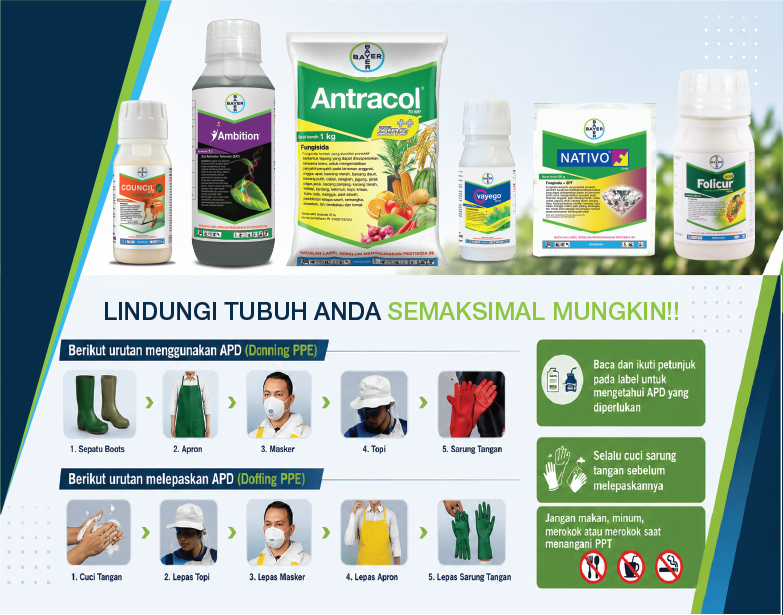
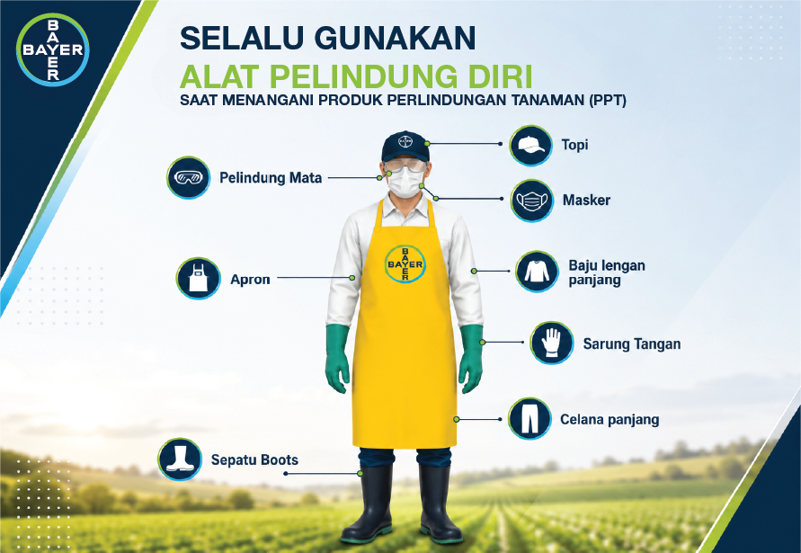
CHECKLIST LAPANGAN
6 Tepat
Gunakan sebagai pengingat sebelum aplikasi.
Gunakan produk yang terdaftar, kemasan utuh, belum kedaluwarsa, dan disimpan sesuai petunjuk. Periksa label sebelum digunakan.
Pilih jenis produk dan bahan aktif yang sesuai dengan sasaran serta fase tanaman. Perhatikan rotasi kelompok cara kerja untuk membantu mengelola risiko resistensi.
Lakukan pengendalian berdasarkan hasil pengamatan, fase pertumbuhan, kondisi cuaca, dan petunjuk label. Hindari aplikasi yang tidak diperlukan.
Ikuti dosis pada label resmi sesuai sasaran dan cara aplikasi. Jangan mengurangi atau melebihkan dosis, dan kalibrasi alat semprot.
Gunakan alat dan teknik aplikasi yang benar, cakupan merata, serta APD yang sesuai. Cegah drift, lindungi sumber air, dan patuhi interval masuk kembali serta pra-panen pada label.
02 / CROP PHENOLOGY
Kenali fase.
Rencanakan perlindungan.
Gunakan diagram fase pertumbuhan padi sebagai gambaran visual untuk menyusun pengamatan di lapangan.
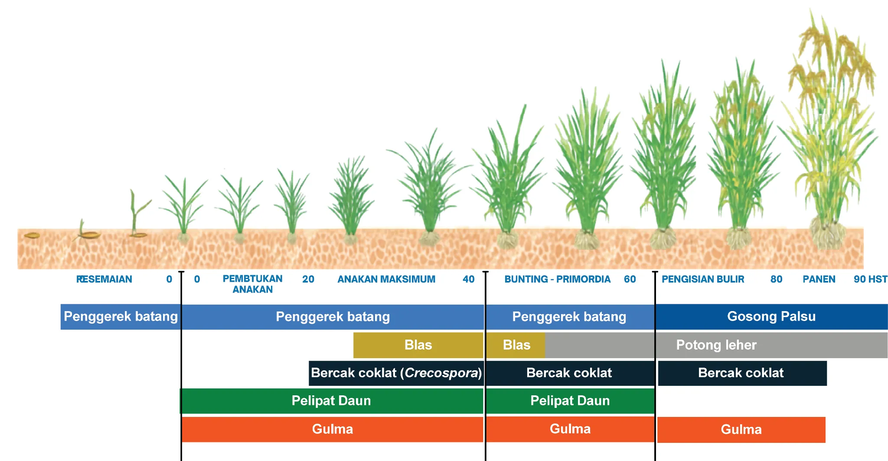
FOKUS LAPANGAN
Perlindungan Awal (0–40 HST)
- Kendalikan gulma hingga tuntas
- Pencegahan sundep & pelipat daun
- Waspada terhadap penyakit blast dan bercak cokelat
- Maksimalkan pembentukan dan pertumbuhan anakan padi
03 / IDENTIFIKASI OPT DI LAPANGAN
Amati gejala.
Kenali penyebabnya.
Pilih kategori untuk melihat daftar OPT. Buka tiap materi untuk membaca gejala dan melihat gambar identifikasi lapangan.
01HamaPenggerek Batang Padi · Pelipat Daun
Penggerek Batang PadiScirpophaga spp. · Sundep dan Beluk＋
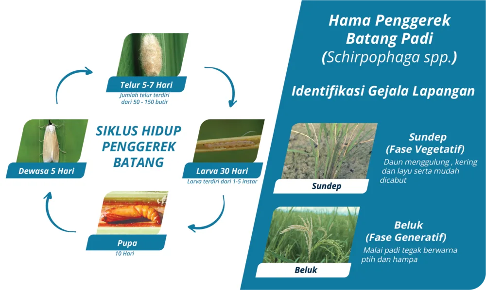
Identifikasi gejala lapangan
- Sundep — fase vegetatif: daun menggulung, mengering, layu, dan mudah dicabut.
- Beluk — fase generatif: malai padi tegak, berwarna putih, dan hampa.
Siklus hidup pada materi
- Telur: 5–7 hari; sekitar 50–150 butir.
- Larva: 30 hari, terdiri dari 1–5 instar.
- Pupa: 10 hari.
- Dewasa: 5 hari.
Kenali fase tanaman dan gejala aktual di lahan.
Pelipat DaunCnaphalocrocis medinalis＋
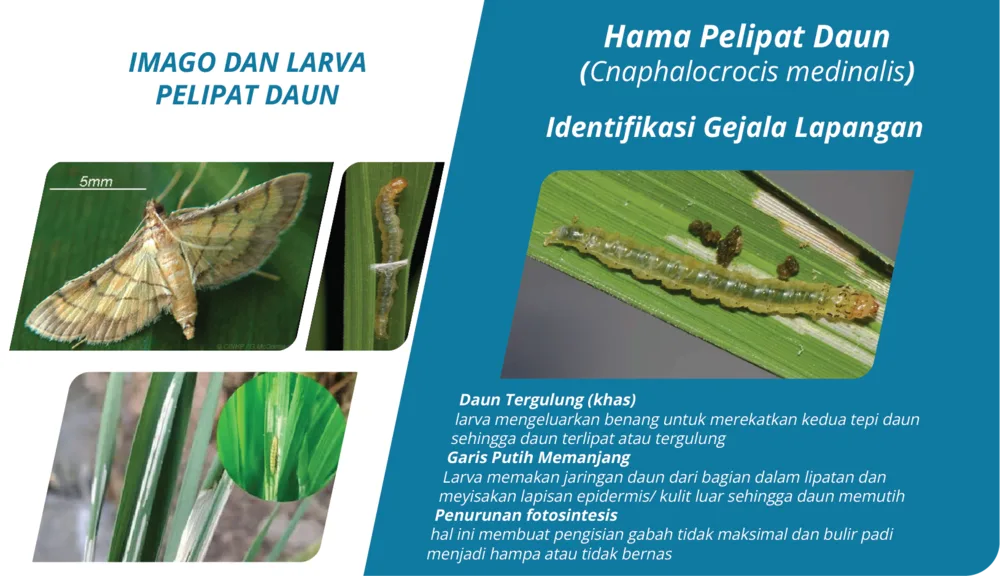
Identifikasi gejala lapangan
- Daun tergulung (khas): larva mengeluarkan benang untuk merekatkan kedua tepi daun sehingga daun terlipat atau tergulung.
- Garis putih memanjang: larva memakan jaringan daun dari bagian dalam lipatan dan menyisakan epidermis sehingga daun memutih.
- Penurunan fotosintesis: dapat membuat pengisian gabah tidak maksimal dan bulir menjadi hampa atau tidak bernas.
Serangan hama pelipat daun padi (hama putih palsu atau Cnaphalocrocis medinalis) mulai masuk ke pertanaman padi sejak umur 15 hari setelah tanam (HST) dan mencapai puncak populasi ulat pada umur 49 HST serta puncak kedua sekitar 91 HST
02PenyakitBlas · Bercak Daun · Gosong Palsu
Blas Daun dan Potong LeherGejala pada daun dan leher malai＋
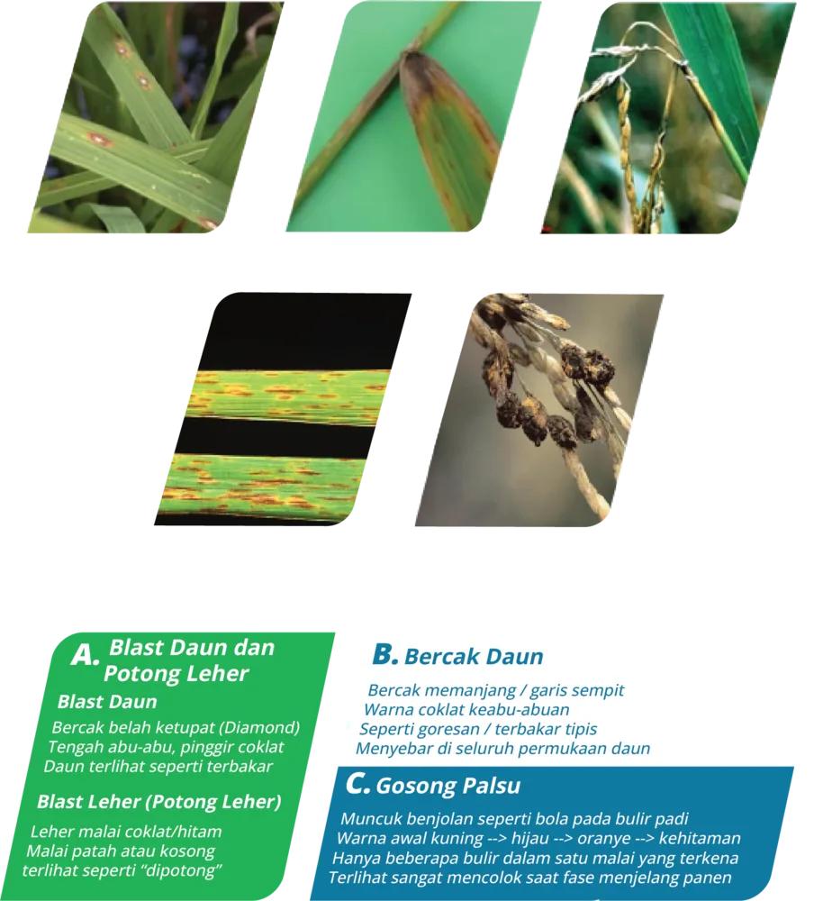
Identifikasi gejala lapangan
- Blas daun: bercak berbentuk belah ketupat, bagian tengah abu-abu dengan tepi cokelat; daun tampak seperti terbakar.
- Blas leher (potong leher): leher malai berwarna cokelat atau hitam; malai dapat patah atau tampak terpotong dan menghasilkan gabah hampa.
Bercak DaunBercak memanjang atau garis sempit＋
- Bercak memanjang atau garis sempit.
- Warna cokelat keabu-abuan, tampak seperti goresan atau terbakar tipis.
- Dapat menyebar di seluruh permukaan daun.
Gosong PalsuGejala pada bulir menjelang panen＋
- Muncul benjolan seperti bola pada bulir padi.
- Warna berubah dari kuning menjadi hijau, oranye, lalu kehitaman.
- Biasanya hanya beberapa bulir dalam satu malai yang terkena dan terlihat jelas menjelang panen.
Materi gambar belum menetapkan rentang HST numerik untuk setiap penyakit. Amati gejala dan fase tanaman secara langsung.
03GulmaRumput · Teki · Daun Lebar
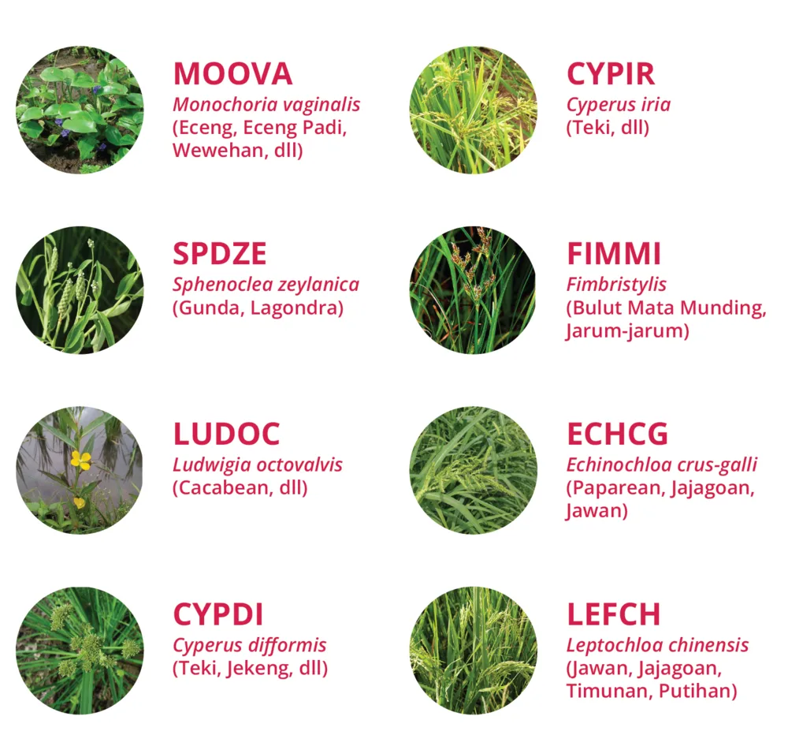
Gunakan foto dan nama berikut sebagai petunjuk awal identifikasi gulma pada lahan padi.
Gulma Daun LebarMOOVA · SPDZE · LUDOC＋
- MOOVA — Monochoria vaginalis: eceng, eceng padi, wewehan.
- SPDZE — Sphenoclea zeylanica: gunda, lagondra.
- LUDOC — Ludwigia octovalvis: cacabean.
Gulma TekiCYPIR · CYPDI · FIMMI＋
- CYPIR — Cyperus iria: teki.
- CYPDI — Cyperus difformis: teki, jekeng.
- FIMMI — Fimbristylis spp.: bulut mata munding, jarum-jarum.
Gulma Rumput / Daun SempitECHCG · LEFCH＋
- ECHCG — Echinochloa crus-galli: paparean, jajagoan, jawan.
- LEFCH — Leptochloa chinensis: jawan, jajagoan, timunan, putihan.
Identifikasi jenis gulma sedini mungkin. Waktu dan metode pengendalian perlu mengikuti jenis gulma, fase tanaman, dan label resmi produk.
Panduan visual ini membantu pengamatan awal. Gejala yang mirip dapat memiliki penyebab berbeda; konsultasikan dengan petugas pertanian atau ahli setempat bila identifikasi belum pasti.
04 / PRODUCT VALUE
Solusi dari Bayer Crop Protection untuk
tantangan OPT di lahan.
Ringkasan produk fokus pada crop padi. Selalu periksa label resmi untuk sasaran, dosis, interval, dan ketentuan penggunaan.
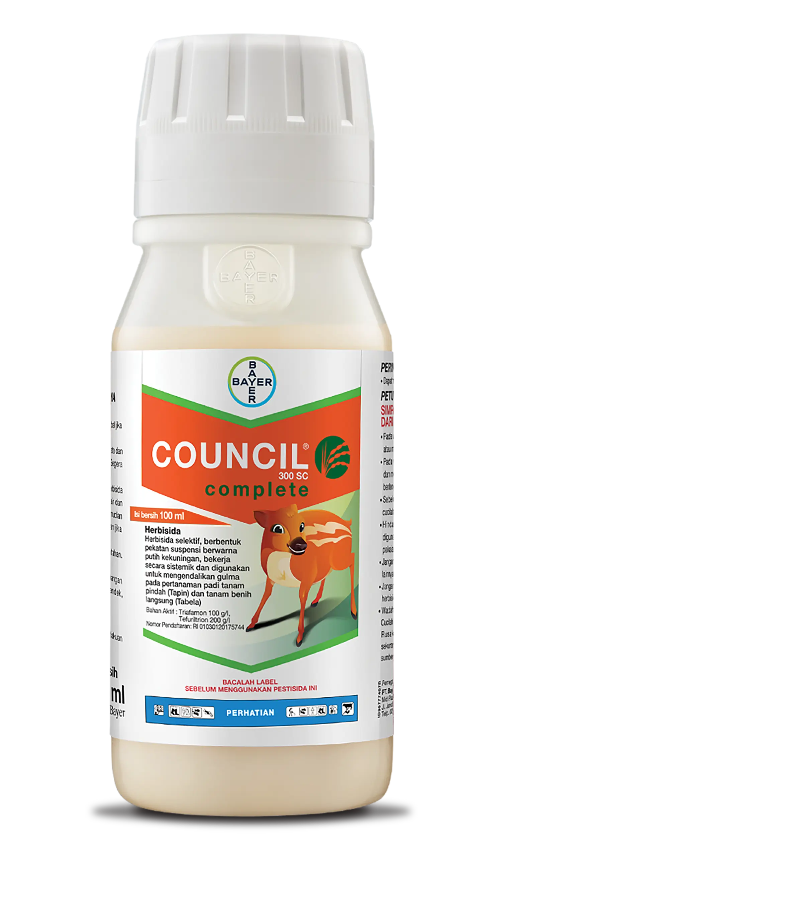
Council Complete 300 SC
Triafamone 100 g/L + Tefuryltrione 200 g/LFormulasi: SC (pekatan suspensi). Cara kerja: sistemik; triafamone menghambat ALS dan tefuryltrione menghambat HPPD. Sasaran: gulma rumput, teki, dan daun lebar pada padi. Waktu aplikasi: Bayer mencantumkan 0–6 hari setelah tanam untuk penggunaan padi.
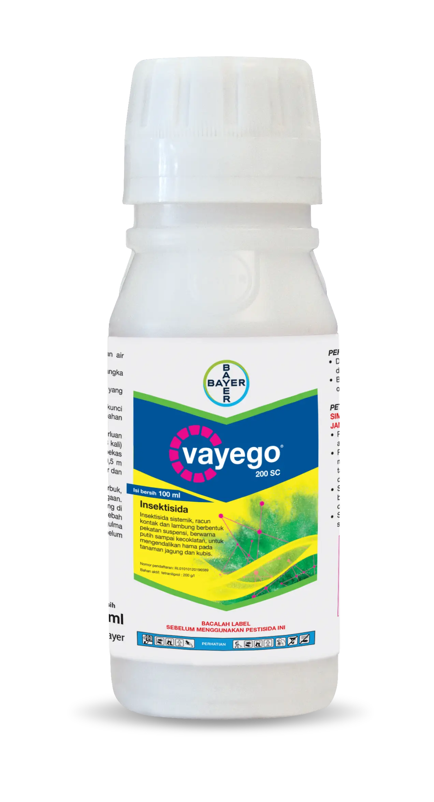
Vayego 200 SC
Tetraniliprole 200 g/LFormulasi: SC (pekatan suspensi), putih sampai kecokelatan. Cara kerja: sistemik, racun kontak dan lambung; modulator reseptor ryanodine (IRAC Grup 28) menyebabkan kontraksi otot dan hama berhenti makan. Sasaran: Penggerek Batang Padi Putih (Scirpophaga innotata), Penggerek Batang Padi Kuning (Scirpophaga incertulas), dan Pelipat Daun Padi (Cnaphalocrocis medinalis)
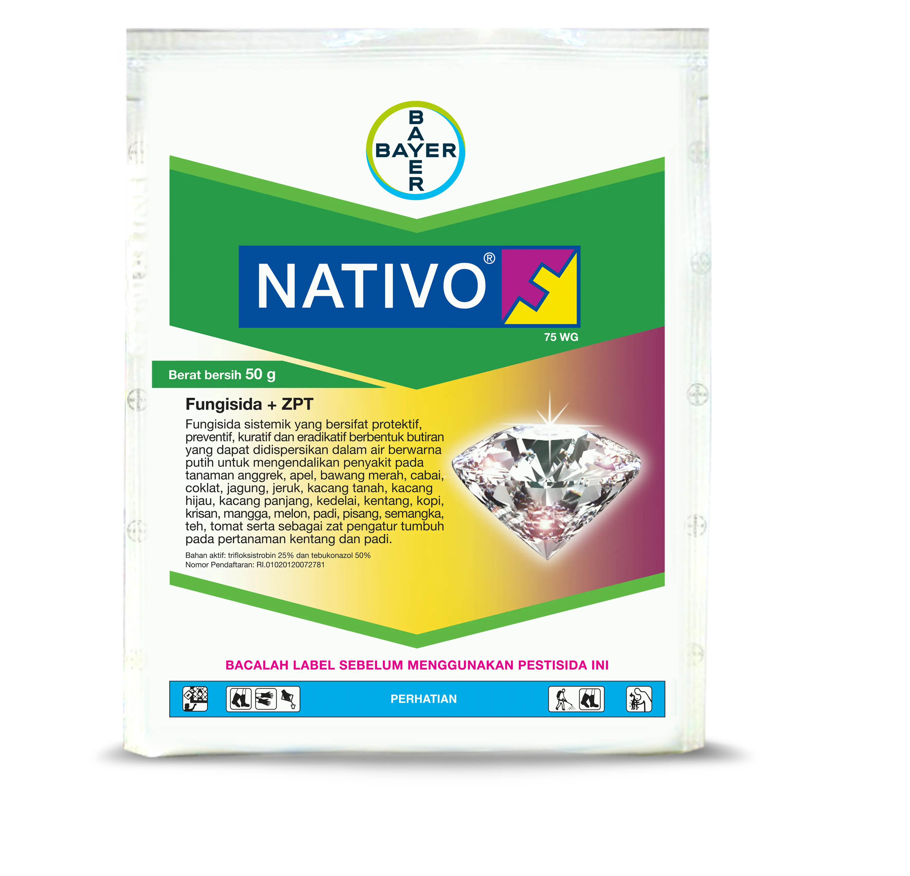
Nativo 75 WG
Trifloxystrobin 25% + Tebuconazole 50%Formulasi: WG (granul terdispersi dalam air). Cara kerja: kombinasi mesostemik/protektif dari trifloxystrobin (mengganggu respirasi jamur; FRAC 11) dan sistemik DMI dari tebuconazole (menghambat biosintesis sterol; FRAC 3). Sasaran padi: blas, bercak cokelat, hawar pelepah, dan gosong palsu sesuai label/registrasi.
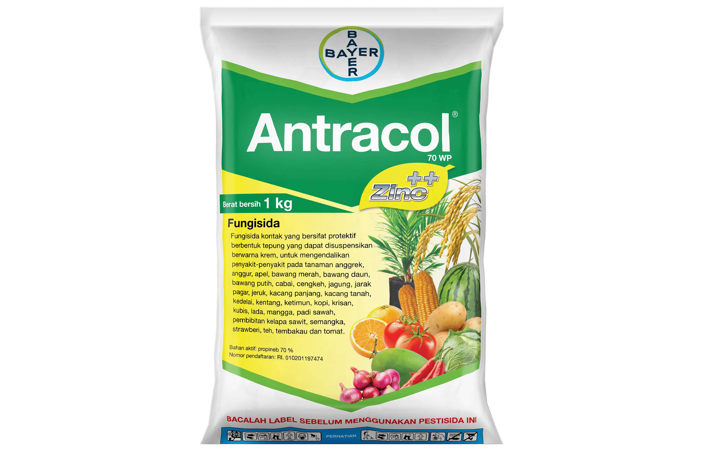
Antracol 70 WP
Propineb 70% WPFormulasi: WP (tepung yang dapat disuspensikan). Cara kerja: fungisida kontak protektif multi-site (FRAC M03), menghambat beberapa proses enzimatik jamur. Sasaran padi yang dicantumkan Bayer: hawar pelepah (Rhizoctonia solani) dan bercak daun tertentu; pastikan sasaran spesifik sesuai label.
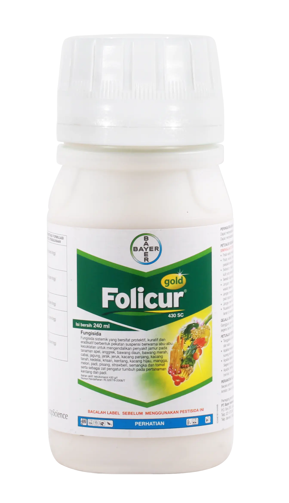
Folicur Gold 430 SC
Tebuconazole 430 g/LFormulasi: SC (pekatan suspensi), abu-abu kecokelatan. Cara kerja: sistemik, protektif, kuratif, dan eradikatif; DMI menghambat biosintesis sterol pada jamur (FRAC 3). Sasaran: bercak daun (Cercospora janseana), bercak cokelat (Helminthosporium oryzae), hawar pelepah (Rhizoctonia solani), bercak bulir/dirty panicle, dan gosong palsu (Ustilaginoidea virens).
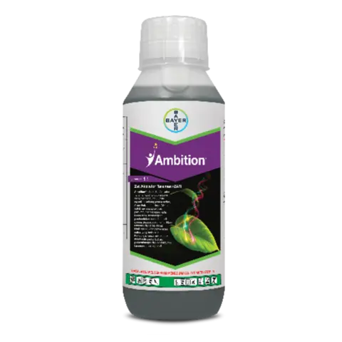
Ambition
Asam amino · Asam fulvat · Nutrisi mikroJenis: zat aktivator tanaman. Peran: Mendukung pertumbuhan tanaman dan kondisi tanaman pada fase vegetatif, reproduktif, dan pemasakan.
05 / PAKET BAYER
Paket perlindungan
tanaman padi.
Pilih paket seusai dengan umur dan fase pertumbuhan tanaman. Keputusan penggunaan tetap berdasarkan pengamatan OPT, fase tanaman, dan label resmi tiap produk.
FASE VEGETATIF
Paket Anakan Super
Kombinasi produk untuk dibahas sesuai kondisi tanaman dan sasaran di lapangan.
- Ambition — aktivator tanaman
- Antracol — fungisida protektif
- Vayego — insektisida
01AmatiFase dan kondisi tanaman
02TentukanSasaran dan kebutuhan
03EvaluasiHasil pengamatan lapangan
FASE GENERATIF
Paket Bobot Maksimal
Kombinasi Produk: Ambition + Nativo + Vayego.
- Ambition — aktivator tanaman
- Nativo — fungisida
- Vayego — insektisida
Bukan instruksi untuk mencampur ketiganya dalam satu tangki. Periksa kompatibilitas, label resmi, sasaran, interval aplikasi, dan kebutuhan aktual sebelum penggunaan.
01AmatiFase pengisian bulir
02SesuaikanOPT dan kebutuhan tanaman
03ValidasiLabel dan rekomendasi teknis
06 / SPRAY PROGRAM
Panduan fase
aplikasi.
Timeline interaktif berdasarkan setiap fase pada tanaman padi
SELECTED SCHEDULE
Pilih titik timeline
Ketuk salah satu usia tanaman untuk melihat catatan aplikasi.
FIELD TOOLS
Kalkulator
lapangan.
Alat bantu hitung kebutuhan produk berdasarkan luas. Pastikan dosis masukan berasal dari label resmi.
⌗ Kalkulator dosis
Hitung kebutuhan produk berdasarkan luas.
KEBUTUHAN PRODUK2 ml atau gKonsentrasi teoritis: 0,17 ml atau g/L
↗ Simulasi ROI
Simulasi ekonomi; bukan jaminan hasil panen.
NILAI TAMBAHAN HASILRp 4.200.000Selisih biaya: Rp 600.000 · Simulasi setelah selisih biaya: Rp 3.600.000
Simulasi ROI berasal dari materi tambahan; hasil aktual dipengaruhi populasi tanaman, jarak tanam, kondisi lapangan, faktor koreksi, dan harga gabah.